Mengubah Foto Mentah Menjadi Data Siap Latih untuk AI
MHPresented by Muhammad Haerul
Mata vs KomputerPixel & RGBAspect RatioNormalizationEDAEdge DensityEXIF & HashPythonOpenCVNumPy
PETA PERJALANAN BELAJAR
Dari Foto Biasa Menuju Data Siap AI
Disusun bertahap dengan analogi sehari-hari — tidak perlu latar belakang IT untuk memahaminya.
01
Bagaimana Kita & Komputer Melihat Gambar
Perbedaan cara mata manusia vs komputer membaca foto, pixel, nilai 0–255, dan RGB channels.
02
Peran AI & Mengapa Perlu Image Processing?
Kenapa foto butuh AI, apa itu AI, bagaimana cara kerjanya, serta kenapa foto mentah wajib dirapikan dulu.
03
Exploratory Data Analysis (EDA)
Mengecek keseimbangan jumlah foto, grafik pencahayaan, serta membedakan latar polos vs ramai.
04
Tiga Jebakan Tersembunyi Kamera HP
Mendeteksi EXIF orientation yang terputar, duplicate images, dan corrupted files.
05
Praktik Santai, Diskusi & Kuis Interaktif
Melihat hasil nyata pada 120 foto sampel, diskusi tantangan latar polos vs ramai, kamus istilah, & kuis.
AGENDA · 120 MENIT
Alur Sesi Hari Ini
Belajar pelan-pelan, penuh ilustrasi visual, dan tanya-jawab interaktif yang tuntas di kelas.
00–10 · Pemanasan
Menyegarkan ingatan tentang data angka dan membayangkan bagaimana komputer "melihat" sebuah foto.
10–40 · Teori & Ilustrasi
Memahami pixel & RGB, peran AI pada foto, alasan Image Processing, EDA dataset, serta 3 jebakan file foto.
40–45 · Istirahat Singkat
Jeda 5 menit untuk minum air dan meregangkan mata sebelum melihat contoh praktik.
45–95 · Praktik Terpandu
Menjalankan 6 langkah pemeriksaan foto secara bertahap pada koleksi foto sampel.
95–110 · Diskusi Kasus
Menebak tantangan nyata: lebih mudah mana bagi AI, foto berlatar polos atau foto berlatar ramai?
110–120 · Kuis & Penutup
Kuis interaktif 5 soal dengan pembahasan langsung serta rangkuman poin terpenting hari ini.
TUJUAN BELAJAR
Apa yang Akan Kita Kuasai?
POIN 01
Paham Bahasa Gambar Komputer
Tahu bedanya cara mata kita vs komputer membaca foto.
Mengerti bahwa setiap foto sebenarnya adalah tabel berisi angka 0–255.
Mengerti konsep RGB channels (Red, Green, Blue).
Hasil: Gambar digital tidak lagi terasa seperti black box.
POIN 02
Paham Peran AI & Image Processing
Mengerti kenapa kita butuh AI dan bagaimana cara AI belajar dari foto.
Mengerti kenapa foto wajib dirapikan (resize proporsional & normalisasi 0–1) sebelum masuk ke AI.
Hasil: Paham hubungan erat antara bahan foto yang rapi dan kecerdasan AI.
POIN 03
Bisa Mengaudit Koleksi Foto
Mampu mengecek apakah jumlah foto sudah seimbang.
Bisa membedakan foto gelap, terang, polos, dan ramai.
Tahu cara menyaring foto rusak dan kembar.
Hasil: Koleksi foto bersih, sehat, dan jujur untuk AI.
PEMANASAN
Dari Data Tabel Biasa ke Sebuah Foto
Data yang Mudah Dibayangkan
Misalnya data tinggi badan, umur, atau harga rumah.
Bentuknya sudah jelas: berupa baris dan kolom angka di Excel.
Komputer langsung bisa menghitung rata-rata atau mencari polanya.
Tapi bagaimana dengan foto? Foto tidak terlihat seperti tabel Excel!
Tantangan Besar Saat Membaca Foto
Saat kita memotret dengan HP, yang tersimpan di memori ternyata bukan gambar utuh.
Komputer tidak punya mata dan tidak punya imajinasi seperti manusia.
Jadi, bagaimana caranya komputer bisa mengenali bentuk bintang, wajah, atau benda lain?
Jawabannya ada di 3 ilustrasi pertama pada Bab 1 berikut ini!
BAB 1 · DASAR PENGENALAN GAMBAR
Bagaimana Kita & Komputer Melihat Gambar?
Mengintip perbedaan besar antara mata manusia yang langsung mengenali bentuk, dan komputer yang hanya membaca lautan angka.
BAB 1 · ILUSTRASI 1
Cara Mata Manusia Melihat Gambar
Otak kita sangat hebat: begitu cahaya masuk ke mata, kita langsung mengenali bentuk, warna, dan maknanya.
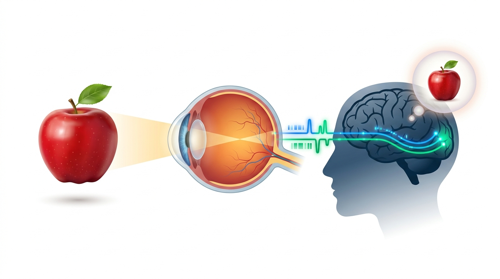
1. Objek Nyata: Cahaya memantul dari apel merah.
2. Mata Menangkap: Lensa memfokuskan cahaya ke retina.
3. Otak Mengenali: Sinyal saraf langsung paham "Ini Apel!"
BAB 1 · ILUSTRASI 2 · SIMULATOR INTERAKTIF
Cara Komputer Membaca Gambar (Coba Langsung!)
Inspektur Pixel Real-Time
Klik atau arahkan kursor ke kotak gambar untuk melihat angka RGB-nya!
Mode 1: Bentuk utuh seperti yang kita lihat.
Mode 2: Dipecah menjadi kotak-kotak pixel.
Mode 3: Komputer hanya melihat angka 0–255!
Komputer sama sekali tidak melihat apel atau bintang — di memorinya, foto hanyalah pixel matrix (array angka)!
BAB 1 · ILUSTRASI 3
Cara Komputer Menampilkan Gambar ke Layar
Kebalikan dari kamera: komputer menyalakan 3 lampu mikro RGB di tiap pixel, menumpuk 3 lapis channel warna, hingga tampil sebagai gambar utuh di layar.
Klik objek atau tombol untuk mengintip cara 1 titik layar menyala:
Tahap 1: Nyalakan 3 Lampu PixelZoom 1000×
1 KOTAK PIXEL LAYAR
R 92%
G 26%
B 21%
1 Titik WarnaTitik Merah
Lampu R paling terang (92%) → menyatu jadi Titik Merah!
Di tiap pixel layar, 3 lampu mikro R, G, B menyala membentuk 1 titik warna.
Tumpuk
Tahap 2: Susun 3 Lapis RGB3 Channel
Ketiga angka tersebut berasal dari 3 lapis channel (R, G, B) yang ditumpuk sejajar.
Tampil
Tahap 3: Tampil Jadi Gambar UtuhLayar HP
Pixel(112, 88) · Apel Merah
Isi 1 Pixel:
R
234
G
67
B
53
Jutaan pixel menyatu menjadi gambar utuh (tiap 1 pixel menyimpan [R, G, B]).
Intinya: Setiap 1 titik (pixel) di layar HP hanyalah 3 lampu mikro Merah, Hijau, Biru yang kecerahannya diatur oleh angka 0–255.
BAB 1 · KONSEP PIXEL
Apa Itu Pixel?
Di Slide 09 kita melihat layar menampilkan jutaan titik lampu kecil — sekarang mari kita perbesar satu kotak penyusunnya.
PIXEL (PICTURE ELEMENT)
Kotak Terkecil Penyusun Gambar
Bayangkan sebuah lukisan mosaik dari keramik kecil-kecil, atau buku gambar berpetak.
Setiap satu kotak tunggal hanya boleh diisi satu warna polos.
Kotak kecil itulah yang disebut Pixel.
Jika kita perbesar (zoom in) sebuah foto sampai mentok, kotak-kotak ini akan terlihat jelas!
Semakin banyak kotaknya, foto terlihat makin halus dan tajam — coba geser pengatur pixel di sebelah kanan!
Eksperimen Kerapatan Pixel8 × 8 (64 pixel)
Kasar (4×4)Geser Jumlah PixelHalus (64×64)
Foto Asli (Halus)
Grid 8 × 8 Pixel
64 kotak pixel: Mulai terlihat kotak-kotak (pixelated) — coba geser ke kanan!
BAB 1 · PENGANTAR COLOR CHANNELS
Isi Tiap Pixel: Jenis Gambar Menurut Color Channel
Setiap kotak pixel dapat menyimpan 1 angka atau beberapa lapis angka sekaligus tergantung jenis dan kegunaan gambarnya:
1 CHANNEL · GRAYSCALE1 angka / pixel
Hitam-Putih & Abu-Abu
Ukur gelap–terang (0–255). Contoh: tulisan tangan (MNIST), Rontgen medis, OCR, & deteksi tepi.
3 CHANNELS · PALING UMUM (FOKUS!)3 angka / pixel
RGB (+ Palet Lain: HSV, LAB, YCbCr)
16 juta+ warna — standar utama foto HP, layar, & AI objek. (Palet 3-ch lain: HSV & YCbCr).
4 CHANNELS · RGBA & CMYK4 angka / pixel
Transparan (PNG) & Cetak
RGBA tambah channel Alpha (transparan PNG/stiker); CMYK dipakai mesin cetak/printer.
5+ CHANNELS · MULTISPECTRAL5–12+ angka / pixel
Satelit, Drone & Sensor Khusus
Gabung RGB + sensor Inframerah (NIR) & Thermal untuk pantau suhu, hutan, dan awan.
Alur Kita: Pertama, mari intip contoh sederhana 1 Channel (Grayscale) di Slide 12–13 — lalu setelahnya kita berfokus pada RGB (3 Channels) karena paling banyak dipakai di foto & AI!
BAB 1 · FOKUS 1 CHANNEL (GRAYSCALE) · EKSPERIMEN
Contoh 1 Channel: 8×8 Pixel Grid (Angka Tunggal)
Klik kotak mana saja untuk mengintip angkanya!
Cara Membaca 1 Channel (0–255)
Angka 0 = Hitam Pekat (intensitas terendah / gelap total).
Angka 255 = Putih Terang (intensitas maksimal / terang penuh).
Angka 100–180 = Abu-abu (remang-remang di antara gelap dan terang).
Karena cuma 1 channel, komputer cukup membaca 1 angka saja per kotak: angka 35 (gelap) di tengah lautan angka 245 (terang).
BAB 1 · CONTOH NYATA 1 CHANNEL (GRAYSCALE)
Studi Kasus Asli 1 Channel: Dataset MNIST (28×28)
Arahkan / klik pixel pada angka '0' di atas untuk melihat nilainya!
MNIST HANDWRITTEN DIGITS (1 CHANNEL)
Kenapa Cukup 1 Channel Saja?
MNIST adalah dataset tulisan tangan angka 0–9 paling legendaris (dipakai di video 3Blue1Brown & tersedia di folder data/mnist/!).
Untuk membaca angka tulisan tinta di kertas, warna tidak dibutuhkan — cukup 1 channel Grayscale (28 × 28 = 784 angka).
Lalu bagaimana dengan foto benda atau karakter nyata? Untuk foto penuh warna, kita masuk ke format yang paling banyak dipakai: RGB (3 Channels)!
Mulai slide berikutnya, kita akan berfokus pada RGB (3 Channels) — standar utama foto kamera & AI pengenalan objek!
BAB 1 · FOKUS UTAMA: COLOR CHANNEL RGB
Fokus ke RGB: Format Paling Umum di Dunia Foto
1 Channel (Grayscale) vs 3 Channels (RGB)
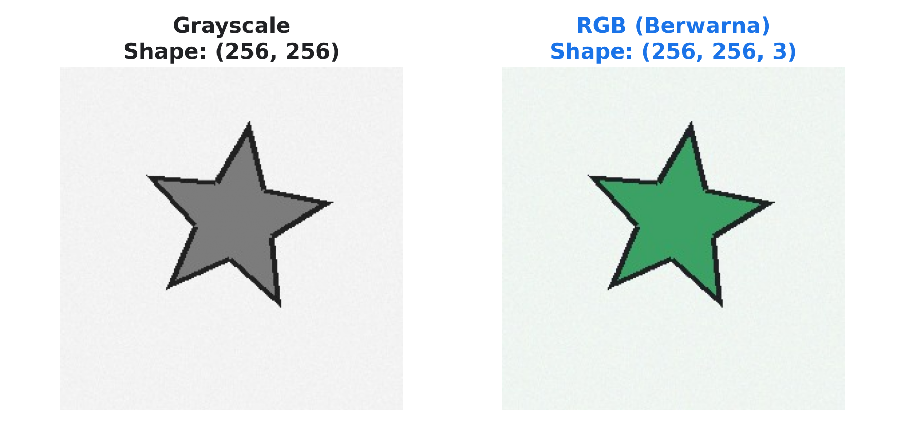
Hampir semua foto kamera HP memakai RGB (3 Channels) agar informasi warna objek tidak hilang saat melatih AI!
Coba matikan semua ke 0 (jadi Hitam) atau naikkan semua ke 255 (jadi Putih)!
Warna: (66, 133, 244)
BAB 1 · FOKUS RGB · BEDAH CHANNEL
Mengintip 3 RGB Channels dalam 1 Foto
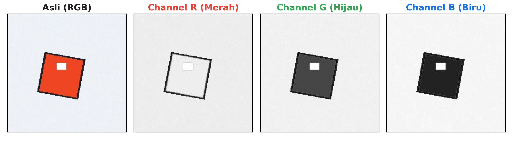
Cara membacanya: Area berwarna terang pada Channel R (Red) menandakan nilai Red yang tinggi. Ketiga lembar inilah yang ditumpuk menjadi 1 foto berwarna RGB!
TANYA & JAWAB INTERAKTIF · #1
Coba Tebak: Berapa Banyak Angka di 1 Foto RGB?
Tadi kita sudah lihat bahwa 1 kotak pixel RGB menyimpan 3 angka (R, G, B). Jika sebuah foto berukuran 224 × 224 pixels, kira-kira berapa total angka yang dibaca komputer untuk 1 foto saja?
A. Sekitar 672 angka saja
B. Sekitar 50.176 angka
C. Lebih dari 150.000 angka!
Jawaban: C — Tepatnya 150.528 angka!
Hitungan sederhananya: 224 baris × 224 kolom × 3 RGB channels = 150.528 angka.
Bandingkan dengan MNIST hitam-putih tadi (784 angka) — foto berwarna punya 192× lebih banyak angka!
TANYA & JAWAB INTERAKTIF · #2
Coba Pikirkan: Pentingkah Warna (RGB) Bagi AI?
Bayangkan kita melatih AI untuk membedakan Jeruk Matang vs Jeruk Mentah, atau dua karakter kartun yang bentuk tubuhnya mirip tapi bajunya beda warna. Apa yang terjadi jika fotonya kita ubah menjadi 1-channel grayscale semua?
A. Tidak masalah, AI tetap mudah membedakannya.
B. AI akan kebingungan karena petunjuk warnanya hilang!
C. AI justru bekerja lebih lambat.
Jawaban: B — AI akan kebingungan karena petunjuk warnanya hilang!
Di foto grayscale, warna oranye cerah dan hijau muda bisa memiliki intensitas abu-abu yang hampir sama. Karena itu, untuk mengenali benda atau karakter sehari-hari, kita menjaga foto tetap dalam format RGB (3 Channels).
BAB 2 · PERAN AI & IMAGE PROCESSING
Bagaimana AI Membaca Foto & Mengapa Perlu Dirapikan?
Menjembatani lautan angka pixel dari Bab 1 menuju cara kerja AI, alasan kita memakai AI, dan pentingnya merapikan foto mentah.
BAB 2 · AI FUNDAMENTAL 1/3 · SIMULATOR KONSEP
Dari Angka Pixel ke Makna: Apa Itu AI?
Klik 3 tombol di bawah untuk membandingkan siapa yang menentukan ciri gambar pada tiap pendekatan:
Program Biasa: 100% aturan ditulis manual oleh manusia (if-else). Cocok untuk kasir/pajak, tapi gagal total untuk foto!
Machine Learning: Mesin memang belajar otomatis, TAPI manusia tetap harus memilihkan ciri-ciri foto secara manual dulu (sudut, warna, ukuran). Susah kalau fotonya kompleks/buram!
Deep Learning (Mesin Project Kita): Tidak ada manusia yang memilih ciri manual! Banyak lapisan saraf otomatis mengekstrak garis → bentuk → objek sekaligus belajar menebaknya.
ANALOGI & PERBEDAAN INTI
Kunci Beda ML vs Deep Learning
Seperti mengajari anak kecil: kita cukup tunjukkan ratusan foto + labelnya tanpa mendiktekan rumus.
Bedanya di "siapa pencari cirinya":
1. Program Biasa: Manusia buat rumus kaku; mesin tidak belajar.
2. Machine Learning: Manusia pilih ciri manual (warna/sudut), mesin baru belajar.
3. Deep Learning ⭐: Foto mentah langsung masuk — mesin berlapis otomatis mencari ciri sendiri sekaligus belajar menebak!
Kenapa project kita pakai Deep Learning? Karena di foto, ciri seperti bentuk telinga & mata terlalu rumit kalau harus diekstrak manual!
Coba klik 5 skenario di bawah (termasuk variasi tulisan tangan MNIST asli) untuk menguji if-else vs AI:
Kondisi 1 (Posisi Tengah Ideal): Objek bintang tepat berada di koordinat tengah dan latar belakang bersih.
PROGRAM BIASA (ATURAN IF-ELSE)
⚠️ Kebetulan Berhasil (Sangat Rapuh)
Karena bintang kebetulan pas di pixel[tengah], aturan if-else tampak berhasil. Tapi coba klik tombol kondisi lainnya!
MODEL AI (DEEP LEARNING)
✅ BERHASIL (Keyakinan: 99%)
AI mengenali pola bentuk 5 sudut bintang & warna kuning secara utuh.
BAB 2 · AI FUNDAMENTAL 3/3 · ALUR KERJA PROJECT
Bagaimana Alur Kerja AI di Project Kita?
Pilih 2 skenario di bawah untuk melihat mengapa Tahap 1 (Merapikan Foto di P01) menentukan hasil akhir AI:
TAHAP 1 · FOKUS HARI INI (P01)
1. Siapkan & Rapikan Foto
Foto diseragamkan ukurannya, ditegakkan, dan disaring agar bebas file rusak.
TAHAP 2 · SESI TRAINING
2. Latih Model AI
AI mempelajari pola bentuk & warna dengan tenang dari koleksi foto bersih.
TAHAP 3 · HASIL AKHIR
3. Tebak Foto Baru
INPUT: Foto Baru dari HP
"Ini Bintang!" ⭐
98% Akurat!
Saat diberi foto baru yang belum pernah dilihat, AI menebak dengan tepat!
Analogi Dapur: Bahan masakan (foto) dicuci dan dipotong seragam dulu di P01 → hasil masakan (prediksi AI) jadi lezat dan akurat!
BAB 2 · ALASAN UTAMA
Mengapa Foto Mentah Perlu Preprocessing?
Kamera HP menghasilkan foto untuk dilihat mata manusia, bukan untuk dihitung mesin. Agar AI belajar akurat, inputnya harus seragam.
MASALAH FOTO MENTAH
1. Resolution Acak
Foto dari kamera HP berbeda-beda ukurannya (ada yang kotak, ada yang panjang). AI hanya bisa menerima ukuran yang sama persis.
MASALAH FOTO MENTAH
2. Skala Angka Terlalu Besar
Angka 0–255 terlalu lebar bagi perhitungan AI. Perlu Normalization ke skala kecil (0–1) agar AI belajar dengan stabil.
MASALAH FOTO MENTAH
3. Kejutan Tersembunyi
Ada foto yang miring/terbalik dari kamera HP, terlalu gelap, berlatar ramai, atau filenya rusak. Semua ini wajib diaudit dulu!
Intinya:Image Processing melakukan resize, menyetarakan skala angka, dan standar kualitas foto sebelum masuk ke tahap pelatihan AI.
BAB 2 · UNIFORM RESOLUTION
Resize & Uniform Resolution
Mengapa Ukurannya Harus Sama?
Foto jepretan HP modern biasanya sangat besar (ribuan pixel lebar dan tingginya).
Foto kiriman WhatsApp ukurannya lebih kecil karena sudah dikompresi.
Model AI bekerja seperti pintu gerbang dengan cetakan pas — semua foto yang masuk harus punya lebar dan tinggi yang sama (contoh populer: 224 × 224 kotak).
Selain adil, ukuran 224 × 224 cukup ringan sehingga komputer bisa melatih ratusan foto dengan cepat!
Masalah Aspect Ratio yang Berbeda
Dataset kita berisi foto dengan rasio beragam, sedangkan input model AI berbentuk persegi sama sisi.
Kalau ada foto yang lebar memanjang (landscape) atau tinggi memanjang (portrait), bagaimana cara memasukkannya ke bingkai persegi?
Hati-hati: jika dipaksa di-stretch begitu saja, bentuk objek menjadi distorted!
Di slide berikutnya kita lihat dampak distorted aspect ratio secara langsung!
BAB 2 · MENJAGA PROPORSI
Jangan Sampai Foto Menjadi Distorted!
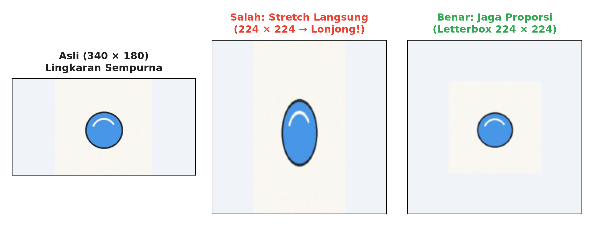
Cara Salah (Tarik Paksa): Lingkaran berubah menjadi lonjong. AI bisa salah mengira itu benda lain!
Cara Benar (Tambah Tepi / Potong Rapi): Menambah ruang kosong di sisi atau memotong tepi agar bentuk aslinya tetap utuh.
TANYA & JAWAB INTERAKTIF · #3
Coba Tebak: Apa Jadinya Jika Aspect Ratio Terdistorsi?
Kita punya foto bola basket yang bulat sempurna dalam bingkai memanjang (persegi panjang). Jika kita langsung memaksa menyusutkannya menjadi kotak persegi 224 × 224 tanpa menjaga proporsi, apa yang terjadi?
A. Bola tetap bulat sempurna.
B. Bola berubah lonjong seperti bola rugbi/telur!
C. Warnanya berubah menjadi grayscale.
Jawaban: B — Bola berubah lonjong seperti bola rugbi atau telur!
Akibatnya, AI mempelajari bentuk yang salah. Jika suatu saat melihat foto bola basket asli yang bulat, AI bisa ragu atau salah menebak. Karena itu, menjaga proporsi asli foto sangat penting dalam Image Processing!
BAB 2 · NORMALIZATION
Menyetarakan Skala Angka (Normalization)
Mengapa Angka 0–255 Perlu Diperkecil?
Komputer menyimpan brightness dalam angka 0 sampai 255.
Saat AI berhitung, angka ratusan (misal 250) terlalu besar dan membuat proses belajarnya tidak stabil.
Maka seluruh angka kita bagi dengan 255, sehingga skalanya berubah menjadi 0.0 sampai 1.0.
Tujuannya sederhana: menjaga agar perhitungan di dalam model AI tetap stabil, cepat, dan tidak melonjak karena angka ratusan.
Dua Skala yang Sering Dipakai AI
Skala 0 sampai 1: Paling mudah dipahami (0 = gelap total, 0.5 = setengah terang, 1.0 = terang penuh).
Skala −1 sampai +1: Dipakai oleh beberapa model AI modern populer (seperti MobileNetV2) agar titik tengahnya tepat berada di angka 0.
Anda tidak perlu menghafal rumusnya — sistem AI modern sudah menyediakan tombol otomatis untuk ini!
BAB 2 · EKSPERIMEN INTERAKTIF
Coba Sendiri: Normalization Calculator
Geser Nilai Intensitas Pixel (0–255)
Angka Asli
128
Skala 0–1
0.502
Skala −1–1
0.004
Formula Skala 0–1x' = x / 255
128 / 255 = 0.502
Formula Skala −1–1 (MobileNetV2)x' = (x / 127.5) − 1
(128 / 127.5) − 1 = 0.004
Perhatikan: saat angka asli di tengah (128), skala 0–1 menjadi sekitar 0.5 dan skala −1–1 mendekati 0!
CATATAN PRAKTIS
Di Balik Layar Sistem AI
Saat memakai model AI siap pakai nantinya, kita tidak perlu menghitung manual satu per satu. Cukup panggil satu fungsi bawaan:
from tensorflow.keras.applications.mobilenet_v2 import preprocess_input
foto_siap = preprocess_input(foto_asli)
Yang terpenting: aturan skala harus sama persis antara saat AI belajar dan saat AI diuji!
BAB 2 · DATA TYPE
uint8 (Integer) vs float32 (Floating-Point)
SAAT DISIMPAN DI HP (UINT8)
Integer: 0, 1, 2, ..., 255
Kamera HP memakai integer tanpa koma agar ukuran file foto kecil dan hemat memori.
Istilah komputernya adalah uint8.
Kekurangannya: Tidak bisa menyimpan angka decimal seperti 0.5!
Contoh nilai pixel: [0, 128, 255] (hanya integer).
SAAT DIHITUNG OLEH AI (FLOAT32)
Floating-Point: 0.000, 0.502, 1.000
Untuk menyetarakan skala ke 0–1, angka harus bisa memakai koma (desimal).
Istilah komputernya adalah float32.
Aturannya: Ubah dulu ke mode floating-point sebelum dibagi 255 agar nilai decimalnya tidak hilang terpotong menjadi nol!
Contoh setelah dibagi 255: [0.000, 0.502, 1.000] (halus & presisi).
BAB 3 · EXPLORATORY DATA ANALYSIS (EDA)
Exploratory Data Analysis (EDA)
Memeriksa 3 Issue Utama isi, distribusi, dan kualitas dataset foto sebelum melakukan training model AI.
BAB 3 · MENGAPA PERLU EDA
Kualitas Model Bergantung pada Kualitas Data
Apa Itu EDA (Exploratory Data Analysis)?
Proses mengaudit kondisi dataset foto secara menyeluruh sebelum diberikan ke model AI.
Tujuannya memetakan potensi masalah sejak awal menjadi Issue #1, #2, dan #3 yang terarah.
Di tahap ini kita hanya mengamati dan mencatat fakta — belum melatih model sama sekali.
Prinsip utama Machine Learning: Garbage In, Garbage Out — data yang berantakan akan menghasilkan prediksi yang buruk.
3 Issue Utama di Bab EDA (+ Bab 4)
Issue #1 · Jumlah Tidak Seimbang: Jangan sampai satu jenis punya 100 foto, jenis lain cuma 5 foto.
Issue #2 · Pencahayaan Ekstrem: Terlalu gelap, silau, atau kontras timpang (Histogram & Brightness).
Issue #3 · Latar Terlalu Ramai: Banyak garis gangguan di background (Edge Density & Polos vs Ramai).
Lanjut di Bab 4: Cek file rusak (corrupted), kembar (duplicate), & foto miring (EXIF).
BAB 3 · ISSUE #1 · CLASS IMBALANCE
Issue #1: Jumlah Foto Tidak Seimbang
Analogi Latihan Soal Ujian
Bayangkan Anda berlatih 95 soal tentang Kucing, dan hanya 5 soal tentang Anjing.
Saat ujian muncul foto yang agak kabur, Anda pasti cenderung menebak "Kucing" karena lebih sering melihatnya!
Hal yang persis sama terjadi pada AI jika jumlah fotonya timpang (istilahnya: Class Imbalance).
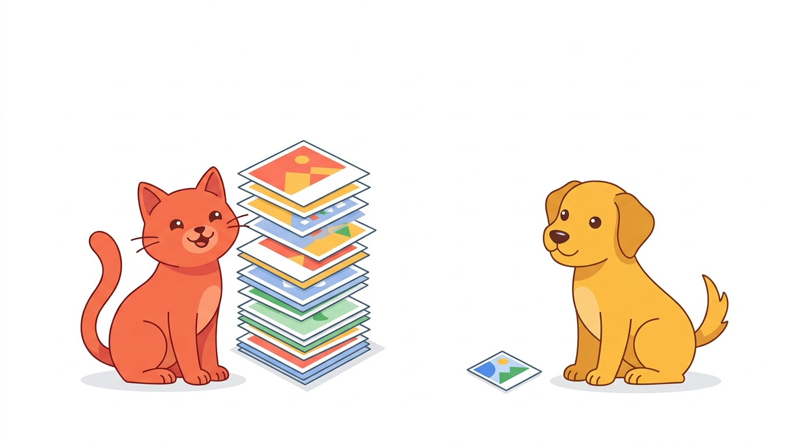
Kucing: 95 fotoAnjing: 5 foto
Kondisi pada Data Sampel Kita
Dalam dataset sampel latihan kita, terdapat 5 jenis bentuk × 2 kondisi latar (polos & ramai).
Setiap kelompok disiapkan 12 foto (total 120 file), sehingga sangat seimbang!
Satu-satunya selisih kecil muncul karena ada 1 file yang sengaja dibuat rusak untuk latihan deteksi.
Selalu hitung jumlah foto di tiap folder kategori sebelum mulai melatih AI.
Contoh Gambar Polos256×256 = 65.536 pikselMean=232.2 | Std=40.1
Contoh Gambar Ramai256×256 = 65.536 pikselMean=122.9 | Std=50.2
PANDUAN MEMBACA HISTOGRAM (65.536 PIKSEL)
Cara Mudah Membaca Grafik Ini
Sisi Kiri (0–84): Banyak titik gelap / bayangan.
Tengah (85–170): Warna dan cahaya seimbang.
Sisi Kanan (171–255): Banyak area putih / sangat terang.
Total Batang = 65.536 Piksel: Jumlah seluruh batang di tiap grafik selalu pas 256 × 256 = 65.536 piksel!
Sebaran 3 Zona Cahaya (Live 65.536 px):Gelap · Sedang · Terang
Gambar PolosGelap 2% · Sedang 5% · Terang 93%
Gambar RamaiGelap 25% · Sedang 58% · Terang 17%
⬛ Gelap (0–84)🟦🟥 Sedang (85–170)🟨 Terang (171–255)
Kondisi Normal (Asli): Foto latar polos punya puncak tinggi di kanan (Mean = 232.2, latar putih bersih), sedangkan foto latar ramai menyebar di tengah (Mean = 122.9)!
Contrast (Ketajaman Beda · np.std):
Polos: 45.21 · Ramai: 54.69
Mengukur jarak perbedaan gelap vs terang di dalam foto.
💡 Efek Geser BrightnessMenambah/mengurangi cahaya ke semua piksel → kotak Boxplot Kiri naik/turun.Rumus: pixel + ΔB
🎚️ Efek Geser ContrastMerentangkan jarak gelap vs terang → kotak Boxplot Kanan naik/turun.Rumus: (pixel − mean) × C
Kondisi Asli (119 Foto Valid): Jika perbedaan Brightness terlalu ekstrem (228.11 vs 127.21), AI bisa curang menebak hanya dari terangnya latar!
BAB 3 · ISSUE #3 (1/4) · LATAR BELAKANG RAMAI
Issue #3: Cek Keramaian Latar (Edge Detection)
Bagaimana Edge Detection Bekerja?
Algoritma mencari titik di mana perubahan warna atau brightness terjadi tajam (batas objek vs latar).
Perubahan tajam itu digambar sebagai edge putih di atas latar hitam (contoh populer: metode Canny).
Animasi Kernel 3×3 Menggeser (Sliding Window)
Gambar Input (5×5)
Kernel 3×3
-10+1-20+2-10+1
Peta Edge (3×3)
Posisi (0,0) → Selisih kiri-kanan = 920 → EDGE TERDETEKSI!
Semakin banyak edge yang terdeteksi, semakin kompleks isi latar belakang foto tersebut.
Menghitung Edge Density
Kita cukup menghitung: berapa persen pixel yang menjadi edge dibanding seluruh foto.
Latar Polos: Hanya ada garis luar objek utama → persentase garis sangat kecil.
Latar Ramai: Penuh garis dari benda-benda di belakangnya → persentase garis melonjak tinggi!
BAB 3 · ISSUE #3 (2/4) · LATAR BELAKANG RAMAI
Issue #3: Bukti Nyata Latar Polos vs Latar Ramai
Foto Asli: Polos
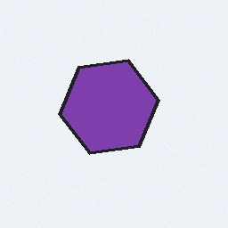
Foto Asli: Ramai
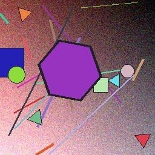
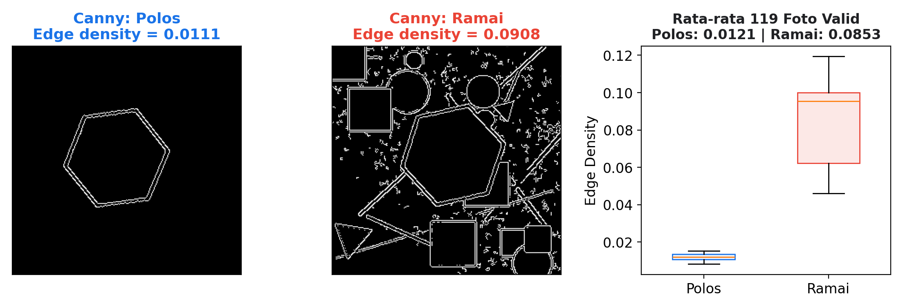
Contoh data sampel (119 valid images): Rata-rata edge density latar polos hanya 0.0121, sedangkan latar ramai melonjak menjadi 0.0853 (~7× lebih padat!).
TANYA & JAWAB INTERAKTIF · #4 (TERKAIT ISSUE #3)
Coba Pikirkan: Kenapa Latar Ramai Mengecoh AI?
Misalkan semua foto Objek A diambil di atas meja kayu berantakan, sedangkan semua foto Objek B diambil di depan tembok putih polos. Apa risiko terbesar saat AI belajar dari foto ini?
A. AI belajar mengenali bentuk Objek A dan B dengan sempurna.
B. AI "curang": ia menghafal meja kayu = A, tembok putih = B!
C. Foto menjadi tidak bisa disimpan.
Jawaban: B — AI bisa "curang" menghafal latar belakangnya!
Komputer selalu mencari jalan pintas termudah. Jika objek A ditaruh di depan tembok putih saat diuji nanti, AI bisa salah menebaknya sebagai Objek B! Itulah mengapa memisahkan evaluasi foto polos vs ramai sangat penting untuk menguji kepintaran AI yang sesungguhnya.
BAB 3 · ISSUE #3 (3/4) · STRATEGI UJI LATAR
Issue #3: Memisahkan Uji Polos vs Ramai
UJI KONDISI BERSIH
Belajar dari Latar Polos → Diuji di Latar Ramai
Jika AI hanya berlatih di studio yang bersih, apakah ia masih sanggup mengenali objek yang sama di jalanan atau ruangan ramai? Di sinilah ketangguhannya diuji!
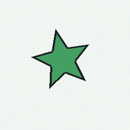
Studio Polos
→
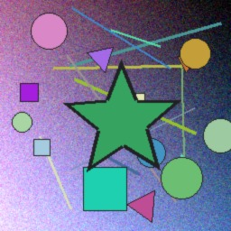
Dunia Ramai (?)
UJI KONDISI CAMPURAN
Belajar dari Foto Campuran (Polos + Ramai)
Dengan memberi variasi latar belakang sejak awal, AI dipaksa fokus pada bentuk objeknya, bukan menghafal tembok atau mejanya.
+
→
Fokus Bentuk
Bukan Latar!
Catat kondisi latar (polos / ramai) di daftar foto Anda sejak tahap pemeriksaan awal ini!
BAB 3 · ISSUE #3 (4/4) · CATATAN BIJAK
Issue #3: Angka Itu Petunjuk, Bukan Vonis
Contoh Pengecualian
Objek yang memakai baju bermotif garis-garis atau kotak-kotak akan menghasilkan banyak edge, walaupun difoto di depan tembok polos!
Sebaliknya, latar belakang yang buram (efek bokeh kamera HP) punya sedikit edge meski sebenarnya berada di tempat ramai.
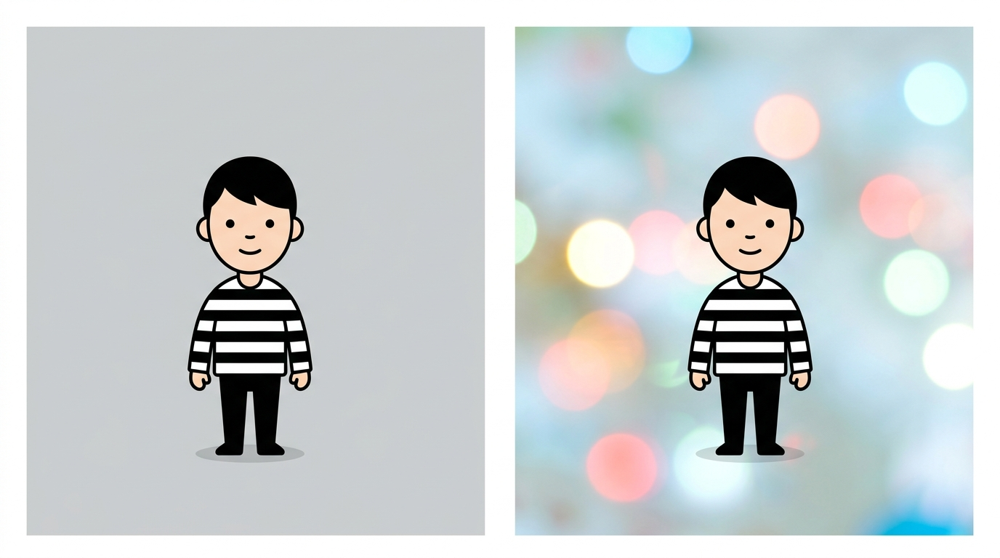
Motif Garis → High EdgeLatar Bokeh → Low Edge
Kebiasaan Baik Pemeriksa Data
Gunakan angka statistik untuk menyaring ribuan foto dengan cepat.
Tetap luangkan waktu melihat langsung beberapa contoh foto dengan mata kepala sendiri untuk memastikan kondisi sebenarnya.
BAB 4 · KUALITAS & KEBERSIHAN DATA
Tiga Jebakan Tersembunyi pada Foto HP
Sebelum statistik EDA di Bab 3 dihitung oleh komputer, foto dari HP ternyata bisa terbaca terbalik, kembar menipu, atau membuat program macet.
BAB 4 · JEBAKAN #1
Terlihat Tegak di HP, Tapi Terputar di Program!
Tanpa Koreksi EXIF (Terputar 90°)
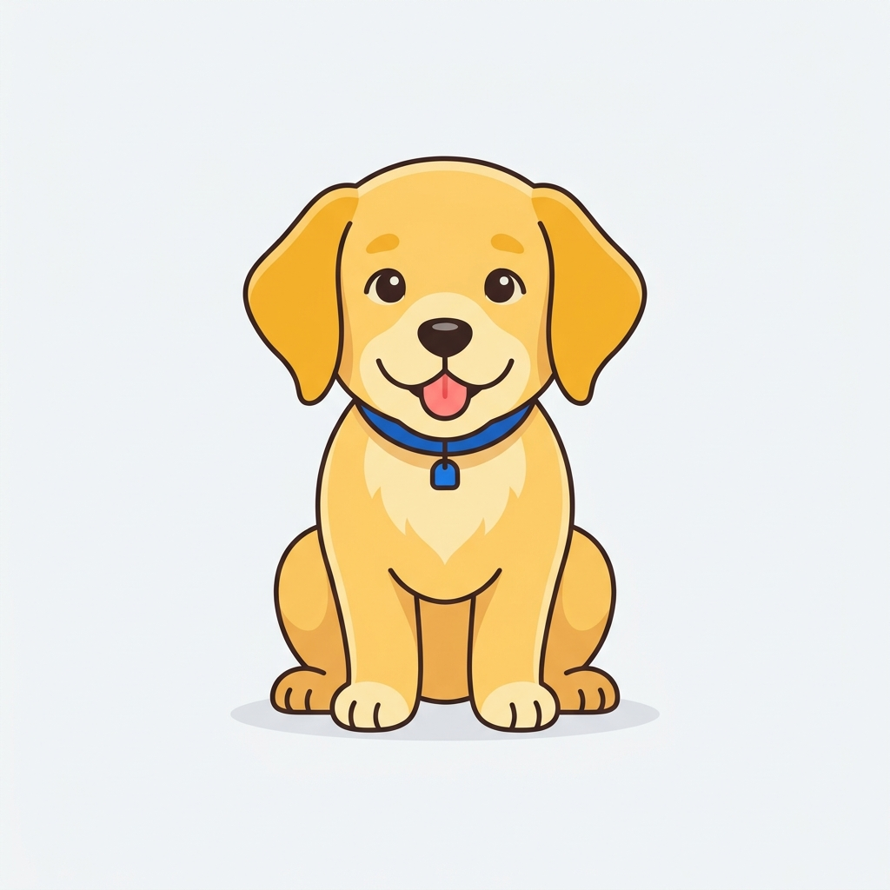
Program membaca piksel miring!
Dengan exif_transpose() (Tegak Benar)
Orientasi tegak sesuai galeri HP
EXIF ORIENTATION
Mengapa Bisa Terbalik?
Saat memotret sambil memiringkan HP, kamera sering menyimpan pixel dalam orientasi asli sensor, lalu menempelkan catatan kecil (EXIF): "Tolong putar 90° saat dibuka".
Galeri HP membaca catatan itu, tapi program pembaca angka sering mengabaikannya!
Solusi mudah: Jalankan perintah putar otomatis (exif_transpose) tepat saat foto pertama kali dibuka!
BAB 4 · JEBAKAN #2
Duplicate Images & Burst Photos
1. Duplicate Images (Kembar Identik)
Sering terjadi tanpa sengaja saat kita menyalin foto dua kali dengan nama file berbeda (misal foto1.jpg dan salinan_foto1.jpg).
Komputer mendeteksinya otomatis dengan membuat file hash (SHA-256).
foto1.jpgHash: 9f8a...
=
salinan_foto1.jpgHash: 9f8a... (Sama!)
Buang 1!
Jika dua file punya hash yang persis sama, sisakan satu dan buang duplikatnya!
2. Burst Photos dalam 1 Sesi
Saat memotret beruntun (burst mode), sudut dan cahayanya 99% sama.
Jika foto ke-1 masuk Train Set dan foto ke-2 masuk Test Set, skor evaluasi AI akan mengalami inflated accuracy!
00:01.1
00:01.3
00:01.5
1 id_sesi
Beri kode id_sesi agar foto dari sesi yang sama tidak terpecah antara train dan test.
BAB 4 · JEBAKAN #3
Satu Corrupted File Bisa Menghentikan Semua Proses
Dari Mana Asalnya Corrupted File?
Proses unduh atau kirim file yang terputus di tengah jalan.
File kosong (0 KB) atau dokumen lain yang keliru diberi akhiran .jpg.
Efeknya: saat AI melatih ratusan foto, program tiba-tiba berhenti error tepat ketika menyentuh corrupted file tersebut!
01.jpg ✓
→
02.jpg ✓
→
✕
03.jpg (0 KB)
→
Program Macet!
Pencegahan Sangat Mudah
Sebelum mulai, perintahkan komputer untuk menguji buka semua file satu per satu.
Catat nama file yang gagal dibuka, lalu sisihkan dari perhitungan statistik maupun daftar latih AI.
Di data sampel kita, ada 1 file sengaja dibuat rusak agar kita terbiasa menyaringnya sejak awal.
TANYA & JAWAB INTERAKTIF · #5
Coba Pikirkan: Bahaya Data Leakage
Kita punya 2 duplicate images. Satu ditaruh di Train Set, dan satu lagi ditaruh di Test Set. Mengapa hal ini sangat berbahaya?
A. Komputer akan hang karena gambarnya sama.
B. Nilai ujian AI terlihat 100% pintar, padahal ia cuma menghafal!
C. Tidak berpengaruh apa-apa pada hasil AI.
Jawaban: B — Nilai ujian AI terlihat pintar palsu karena bocor!
Ibarat siswa yang sudah diberi kunci soal ujian yang persis sama sebelumnya. Saat diuji di dunia nyata dengan foto baru yang belum pernah ia lihat, performanya langsung anjlok. Dalam dunia AI, kebocoran ini disebut Data Leakage.
BAB 4 · ATURAN EMAS
4 Aturan Emas Menjaga Kejujuran Data
1. Hapus Duplicate Sebelum Split
Pastikan tidak ada duplicate images sebelum membagi dataset menjadi Train Set dan Test Set.
2. Jaga Group Sesi Foto
Burst photos dari momen yang sama harus masuk ke satu kelompok yang sama (jangan terpecah antara train dan test).
3. Test Set Disimpan Rapat
Jangan mengintip atau menyetel aturan berdasarkan Test Set; biarkan ia menjadi ujian terakhir yang murni.
4. Catat Semua Pembersihan
Simpan daftar corrupted files dan duplicates yang dibuang agar audit data tetap transparan.
BAB 5 · PRAKTIK & UJI PEMAHAMAN
Saatnya Praktik, Diskusi & Uji Pemahaman
Melihat alur 6 langkah pemeriksaan foto, mendiskusikan tantangan polos vs ramai, dan menguji pemahaman lewat kuis.
HANDS-ON · 50 MENIT · SINKRON DENGAN NOTEBOOK
6 Langkah Praktik di Notebook (Sesuai Bab 1–4)
Kode di Notebook sudah dipecah cell-by-cell ramah pemula dengan komentar penjelasan tiap baris. Langkah 04 (Bab 4) menyaring file rusak dulu sebelum Langkah 05 (Bab 3) menghitung statistik EDA — intip kodenya di Slide 48–49!
01
Baca Gambar & Intip Matriks Pixel (Bab 1)
Buka 1 foto data/sample/ & angka data/mnist/ (28×28), cek .shape, lalu zoom-in melihat angka 0–255.
02
Pisahkan RGB Channels & Grayscale (Bab 1)
Pisahkan 3 lapisan warna (Red, Green, Blue) dan ubah ke 1 channel Grayscale.
Hitung class balance, brightness, contrast, histogram, & edge density (Canny).
06
Simpan Ringkasan Audit & Grafik
Ekspor tabel audit (CSV) dan grafik perbandingan polos vs ramai ke folder results/.
PRAKTIK · DI BALIK LAYAR
Cara Komputer Mengecek Corrupted File & EXIF
Logika Sederhananya
Kita tidak perlu menulis rumus rumit dari nol.
Pustaka gambar Python (Pillow) sudah punya tombol khusus untuk memeriksa apakah file utuh dan untuk memutar foto sesuai catatan EXIF.
Jika file gagal diperiksa, komputer langsung menandainya sebagai rusak lalu lanjut ke file berikutnya tanpa macet!
1. verify()Utuh ✓ / Rusak ✕
→
→
2. Tegak + RGB
Cuplikan Perintahnya
from PIL import Image, ImageOps
# 1. Uji apakah file foto sehat
with Image.open(lokasi_foto) as img:
img.verify()
# 2. Buka lagi, putar tegak (EXIF), ubah ke RGB
with Image.open(lokasi_foto) as img:
img = ImageOps.exif_transpose(img).convert("RGB")
PRAKTIK · DI BALIK LAYAR
Cara Komputer Mendeteksi Duplicate Images
File Hash (SHA-256)
Bagaimana komputer tahu dua file berbeda nama ternyata isinya kembar identik?
Komputer meringkas isi file menjadi kode unik pendek (disebut Hash), sebagai identitas unik isi file.
Jika kodenya sama persis, berarti fotonya 100% kembar walaupun nama file-nya diganti!
foto_a.jpg
→SHA-256: a3f9c2...
copy_b.jpg
→SHA-256: a3f9c2...
Cuplikan Perintahnya
import hashlib
def get_file_hash(lokasi_foto):
isi = open(lokasi_foto, "rb").read()
return hashlib.sha256(isi).hexdigest()
# Dua duplicate images pasti menghasilkan hash yang sama!
MINI-CHALLENGE · 10–15 MENIT
Diskusi Kasus: Polos vs Ramai
FAKTA DATA SAMPEL (119 FOTO)
Ringkasan Statistik Sampel
Foto Polos: Brightness 228.11, edge density 0.0121.
Foto Ramai: Brightness 127.21, edge density 0.0853 (~7× lebih padat!).
Polos Terang & bersih Edge: 0.0121
Ramai Penuh corak Edge: 0.0853
Angka sudah di tangan. Sekarang saatnya berpendapat!
3 Pertanyaan Diskusi Bersama
1. Menurutmu, kondisi mana yang akan lebih sulit ditebak oleh AI nantinya: Polos atau Ramai? Mengapa?
2. Jika AI hanya kita latih dengan foto Polos, kira-kira apa yang terjadi saat ia melihat foto Ramai?
3. Apa saranmu agar AI bisa pintar di kedua kondisi sekaligus?
Petunjuk: Latar ramai lebih menantang (~7× lebih banyak edge). Jika AI hanya dilatih foto polos, ia mudah terkecoh oleh latar belakang baru. Solusinya: campur foto polos + ramai di Train Set!
GLOSARIUM · 1/2
5 Istilah Dasar Gambar & AI
Istilah
Penjelasan Bahasa Sehari-hari
Pixel
Elemen kotak terkecil penyusun gambar digital; setiap pixel berisi nilai intensitas 0–255.
RGB & Grayscale
RGB: 3 channel warna dasar (Red, Green, Blue). Grayscale: 1 channel yang hanya mengukur gelap-terang.
Deep Learning (AI)
Cabang AI yang belajar mengenali pola gambar (garis tepi → bentuk → objek) langsung dari banyak contoh foto.
Resolution
Jumlah total pixel lebar × tinggi yang membentuk sebuah foto (misal diseragamkan ke 224 × 224).
Aspect Ratio
Perbandingan lebar dan tinggi foto yang harus dijaga agar objek tidak gepeng/terdistorsi saat di-resize.
GLOSARIUM · 2/2
5 Istilah Image Processing & EDA
Istilah
Penjelasan Bahasa Sehari-hari
Normalization
Menyetarakan skala nilai pixel dari 0–255 menjadi angka kecil (0–1 atau −1–1) agar AI lebih mudah menghitung.
EDA
Exploratory Data Analysis — proses memeriksa kualitas, distribusi, dan kebersihan dataset foto sebelum training model AI.
Histogram
Grafik sebaran intensitas pixel untuk melihat apakah foto terlalu gelap, pas, atau terlalu silau.
Edge Density
Rasio jumlah pixel edge terhadap total pixel; makin tinggi nilainya, makin ramai isi foto tersebut.
EXIF & Hash
EXIF: metadata orientasi rotasi dari kamera. Hash: kode unik (SHA-256) dari isi file untuk mendeteksi duplicate.
KUIS INTERAKTIF · BAGIAN 1/3
Uji Pemahaman: Soal 1 & 2
SOAL 1 · CARA KOMPUTER MELIHAT
Apa yang sebenarnya dilihat komputer saat membaca sebuah foto?
A. Bentuk benda secara langsung seperti mata manusia. B. Matriks pixel berisi nilai intensitas 0–255. C. Rekaman suara kamera.
Jawaban: B. Komputer tidak punya mata; ia hanya membaca deretan nilai brightness (0–255) di setiap pixel.
SOAL 2 · WARNA RGB
Jika nilai RGB = (255, 255, 255), warna apa yang tampil di layar?
A. Hitam pekat B. Grayscale gelap C. Putih terang
Jawaban: C. Ketika ketiga channel RGB berada di nilai maksimal (255) bersama-sama, hasilnya adalah cahaya putih terang.
KUIS INTERAKTIF · BAGIAN 2/3
Uji Pemahaman: Soal 3 & 4
SOAL 3 · IMAGE PROCESSING
Mengapa kita perlu mengecilkan foto secara proporsional & menyamakan skalanya ke 0–1?
A. Agar aspect ratio tidak terdistorsi dan training AI lebih stabil. B. Agar foto berubah menjadi grayscale. C. Agar ukuran file menjadi lebih berat.
Jawaban: A. Menjaga proporsi mencegah distorsi bentuk, dan normalization ke 0–1 membantu AI belajar dengan tenang dan stabil.
SOAL 4 · JEBAKAN KAMERA HP
Mengapa foto tegak di HP kadang tampak miring / tertidur (rotated) saat dibaca oleh program komputer?
A. Karena ukuran fotonya terlalu kecil. B. Karena komputer mengabaikan metadata EXIF orientation dari kamera HP. C. Karena fotonya berlatar belakang polos.
Jawaban: B. Kamera HP sering hanya menulis metadata EXIF tanpa memutar matriks pixel aslinya, sehingga perlu diputar otomatis saat dibuka.
KUIS INTERAKTIF · BAGIAN 3/3
Uji Pemahaman: Soal 5 (Penentu!)
SOAL 5 · KEJUJURAN DATA
Apa bahayanya jika foto duplicate dibiarkan masuk ke Train Set dan Test Set sekaligus?
A. AI akan menolak membuka gambar tersebut. B. Nilai ujian AI mengalami inflated accuracy akibat data leakage. C. Gambar akan otomatis terhapus oleh komputer.
Jawaban: B. Duplicate images menyebabkan data leakage: akurasi evaluasi tampak tinggi, padahal gagal saat bertemu foto baru di dunia nyata!
Jika Anda bisa menjawab 4–5 soal dengan benar, Anda sudah menguasai seluruh fondasi materi hari ini!
RINGKASAN UTAMA
3 Hal Terpenting yang Kita Bawa Pulang
01
Image = Pixel Matrix
Mata kita melihat bentuk, sedangkan komputer hanya membaca matriks pixel berisi nilai 0–255 dan 3 RGB channels.
02
AI Butuh Bahan yang Rapi
AI belajar mengenali pola dari contoh foto. Image Processing memastikan ukuran foto seragam (224×224) tanpa gepeng dan skalanya stabil (0–1).
03
Exploratory Data Analysis (EDA)
Mengaudit keseimbangan kelas, pencahayaan, kondisi polos vs ramai, serta menyaring jebakan EXIF, corrupted files, dan duplicates.
CLOSING
”
Data yang bersih melahirkan model yang cerdas, sedangkan Image Processing & EDA memastikan AI belajar dari pola yang benar.
REFERENSI BELAJAR MANDIRI (1/2) · BERURUTAN
Klik Kartu untuk Membuka Tautan ↗
Video & Sumber Belajar: Piksel, AI & Image Processing
Ikuti urutan langkah 1 → 8 di bawah ini sebelum atau sesudah sesi untuk membangun fondasi pemrosesan citra.